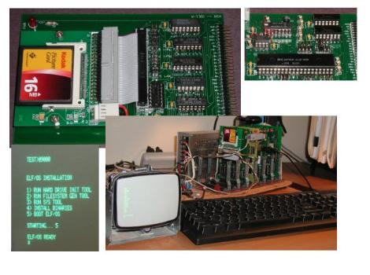

As you can see from the older 1802 systems documented on the home page I have been tinkering with the 1802 since the original Popular Electronics ELF articles first appeared. When Mike Riley published ELF/OS I was motivated to dust off my old System-4 and start the long process of updates required to make this home built system compatible with the hardware requirements of ELF/OS. Although I had designed and built System-4, all the work was done between 1979-1982 so some of the documentation was hard to make out if I could find it all. Also all the cards were built with wire wrap techniques, which can be a bit unpleasant to modify. All this lead to the decision to keep the basic bus definition and create System-5, a complete new system using printed circuit boards. This would allow me to update one card at a time mixing old wire wrap cards and the new PCB cards. Another requirement of this approach was that all new cards must be backward compatible with the older System-4. Yes it would have been easier to order a MicroELF from Mike or a STG ELF2000 but I just couldn't help myself :-)
The new schematics and PCB layouts as well as this web site finally fix the lack of documentation problem. All the cards are designed using EAGLE CAD software. The new cards liberally borrow ideas from Mike Riley's MicroElf and PicoElf, Spare Time Gizmo's ELF2000, the , and several very old BYTE articles. Many of the cards are still under revision, so if you have any thoughts about using these designs and layouts please contact me (ken at cottageworker dot com) for the latest status information. I will try and keep the System-5 documentation up to date as the boards are revised. All comments and thoughts (ken at cottageworker dot com) are welcome.
